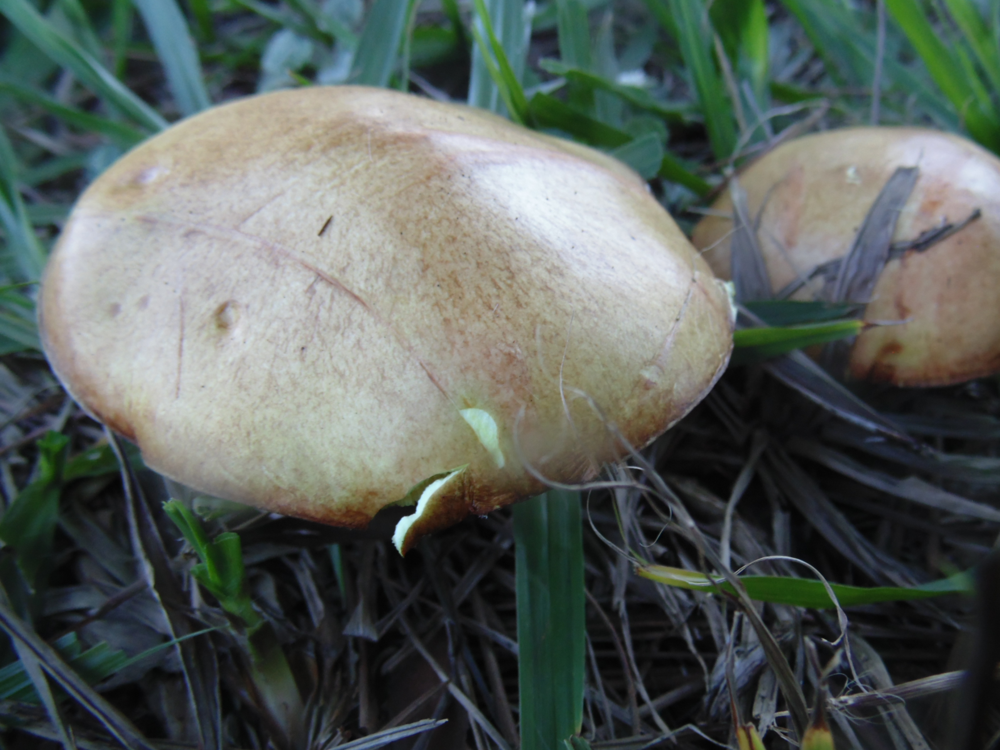
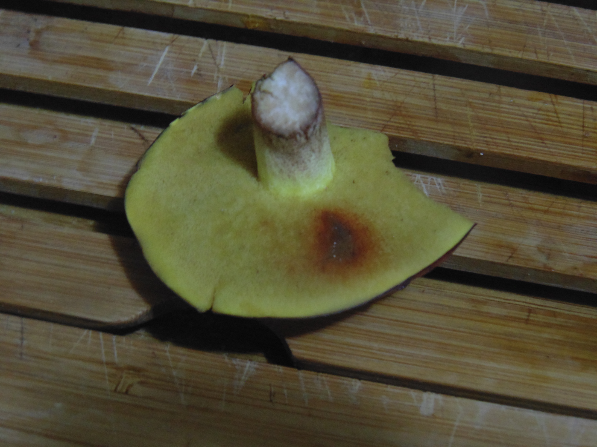
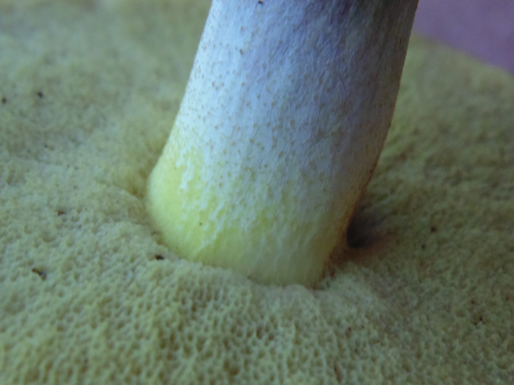
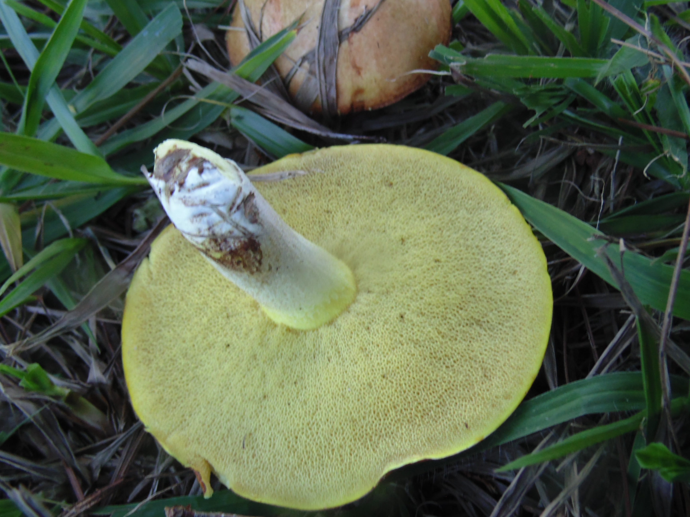

Cogumelos que crescem no chão
Lentinus tricholoma (Mont.) Zmitr.
Polyporaceae
Descrição modificada de: Louza & Gugliota (2007). Referência indicando que a espécie é comestível: Boa (2004); Fidalgo & Prance (1976).
Basidiocarpos solitários ou agregados; centralmente estipitados. Píleo 1.5-6 cm de diâmetro; 0.1-0.2 cm de espessura; circular; côncavo quando jovem; infundibuliforme ou umbilicado quando mais velho; superfície superior bege a castanha, às vezes com o centro mais escuro, azonada, enrugada quando seca; margem concolor à superfície superior, inteira, involuta quando seca, glabra e ciliada. Estipe cilíndrico; creme; 1.8-6 x 0.2- 0.5 cm. Himênio poroide; branco a creme; poros regulares, hexagonais, 4-6 por mm. Estipe cilíndrico; creme a castanho-claro; 1.8-6 x 0.2-0.5 cm. Esporada branca. Esporos cilíndricos a subcilíndricos; hialinos; inamiloides; parede fina e lisa; 6.25-7,5 x 2,5(3.75) μm.
Forma de consumo: devido ao sabor adstringente a melhor forma de consumo é em forma de refogados. Recomenda-se fortemente que a água de fervura seja trocada várias vezes antes de refogar o cogumelo, isso elimina o sabor adstringente.
Hábitat: decompositor de serrapilheira em Mata de galeria. Observação: certificar-se de que a superfície himenial é poroide e que a margem do píleo apresente cílios, para que não seja confundida com uma espécie agaricoide potencialmente letal.


Suillus granulatus (L. ex Fr.) Kuntze
Boletaceae
Descrição modificada de: Lyncoff, G. H. (1981). Referência indicando que a espécie é comestível: Kuo, M. (2007)
Basidiocarpos solitários; centralmente estipitados. Píleo 5-15 cm de diâmetro, circular, convexo; superfície do píleo bege, pegajosa; margem concolor à superfície superior, inteira, glabra. Estipe cilíndrico; creme; 1.8-6 x 0.2- 0.5 cm. Himênio poroide; branco a creme; poros pequenos, amarelados, apresentando forte oxidação vermelha na presença de amônia. Estipe cilíndrico, esbranquiçado, se tornando amarelado próximo ao píleo, 4-8 x 1-2l5 cm, coberto de pontuações amarronzadas principalmente próximo ao píleo. Esporada de cor bege-amarelada.Esporos elípticos, lisos, de 7-10 x 2,5 - 3,5 μm.
Forma de consumo: Deve ser refogado. A delicada pele que envolve o píleo na parte superior deve ser retirada, pois possui um efeito levemente laxante.
Hábitat: micorrízico com espécies de pinheiro (gênero Pinus) sendo portanto encontrado em áreas não naturais, como plantações de pinheiro ou em outras situações onde são empregados, como no paisagismo urbano e rural.



